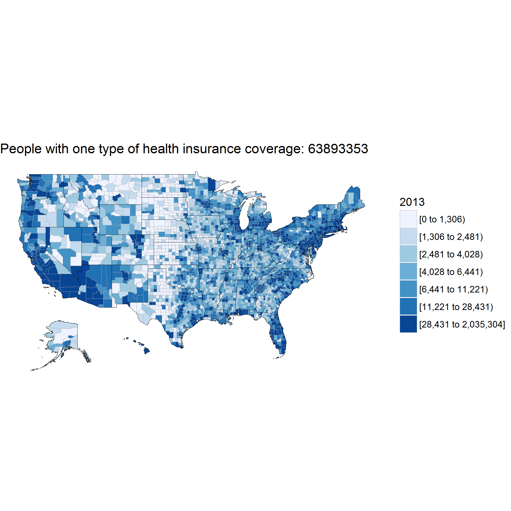
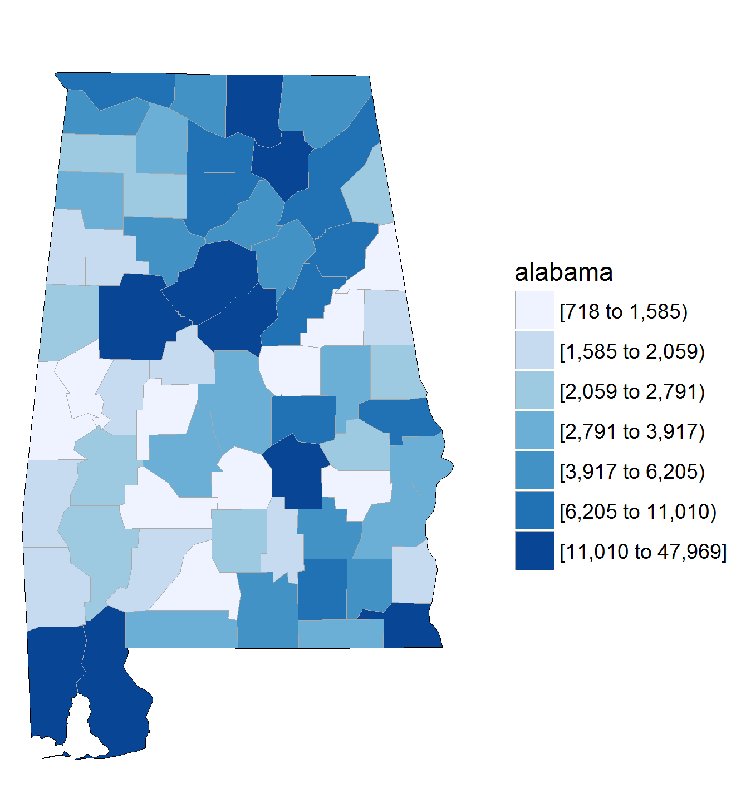

As I have been using R for a while, one of the things I wanted to do was a time series map. Most of the time series maps I see have sliders to change the years. While looking at how to make time series maps I happened to lear how to make a GIF with a set of images.
So I thought, how about making an election based map over the past elections. First I couldn’t get the historical data. Also, there’s an abundance of election news right now anyways, so I didn’t want to take on that topic. Then I went on making several maps to see which demographic variable would be a right fit for this exercise. I ended up using “People with at least one Health Insurance coverage”. This variable was strictly selected for learning purpose. The library I have used here is Choroplethr and ChoroplethrMaps by Ari Lamstien.
Now to get the demographics data into R I have used the American Community Survey(ACS) library. For this you must get API key from ACS website.
library(acs)
library(choroplethr)
library(choroplethrMaps)
library(ggplot2)
#api.key.install(key="API from the ACS website")
Once this is done you can use the ACS lookup function to search for the variables list.
acs.lookup(keyword = "Population", endyear = 2013 )
Now as I mentioned above I did want to do make maps for over a time period. So their are two ways to make them. Either save each map individually or just put them through a loop for all the years you want to make maps for . Below is the code for how to put through a loop and save all the maps at once.
# array of years
vr<-c(2013,2014,2015)
for (i in 1:3) {
vr[i] <- vr[i]
print(vr[i])
getdata = get_acs_data("B27010", "county",endyear=vr[i],span = 5, include_moe = FALSE)
str(getdata)
#to get this into a dataframe
df = getdata[[1]]
data(county.regions)
head(county.regions)
df2 = merge(df, county.regions)
df2 = df2[order(-df2$value), ]
head(df2)
totalCount <- sum(df2$value)
totalCount
myplot<- county_choropleth(df2, title = vr[i],legend = totalCount,county_zoom = NULL)
#use paste to covert params passed into it to a Character string.
ggsave(myplot,filename=paste("Health Coverage", vr[i],".png",sep=""))
}
So once this was done I get images like the one below for each year I have mentioned in the code.
 Once this was done I wanted to make a gif for all the individual maps. I have used ImageMagick for it . Once your download and install it
go to the command prompt and go the path where all the images have been saved. Below is the command to generate the gifs.
Once this was done I wanted to make a gif for all the individual maps. I have used ImageMagick for it . Once your download and install it
go to the command prompt and go the path where all the images have been saved. Below is the command to generate the gifs.
magick -delay 100 -loop 0 *.png animation.gif
To break it down first you define how much should be the delay time , then select all the pngs in the folder and then the name you want to save the gifs.

This particular exercise was mainly on learning how to make choropleth maps using demographics variable and publish them as a GIF to see how the variable varies over a time period. Also you could see in the numbers that the Insurance coverage did increase over the time period.
Post this I did want to see how it could be done for all the states in the US separately. Below is the code and the output too. The demographics variable I have used here is the CY population.
library(acs)
library(choroplethr)
library(choroplethrMaps)
library(ggplot2)
#api.key.install(key="API from the ACS website")
vr<-c(2015)
for (i in 1:1) {
vr[i] <- vr[i]
print(vr[i])
l = get_acs_data("B00001", "county",endyear=vr[i],span = 5, include_moe = TRUE)
str(l)
df = l[[1]]
head(df)
data(county.regions)
head(county.regions)
df2 = merge(df, county.regions)
df2 = df2[order(-df2$value), ]
head(df2)
totalCount <- sum(df2$value)
totalCount
stt <- c(unique(df2$state.name))
stt
for ( i in 1:51) {
print(stt[i])
myplot<- county_choropleth(df2, title = "",legend = stt[i],state_zoom = stt[i])
ggsave(myplot,filename=paste("Population_",stt[i],".png",sep=""))
}
}

You could change to any demographics variable you want and see how many years the data is available for and make maps as per your needs. Happy GIFFING !!!